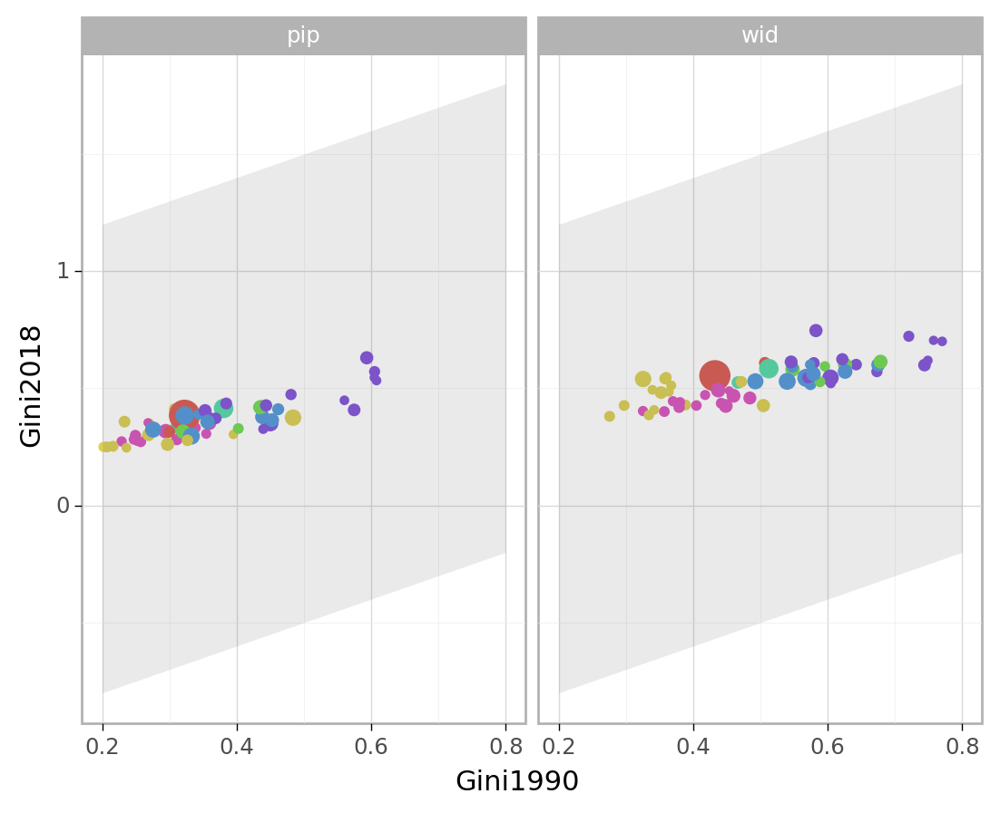

from plotnine import *
import pandas as pd
import numpy as npAppendix 1.B: Analysing global trends in within-country inequality
Load in the data
# df_wid = pd.read_csv("data/clean/wid.csv")
# df_pip = pd.read_csv("data/clean/pip.csv")
# df_regions = pd.read_csv("data/clean/WID_region_mapping.csv")
# df_pop = pd.read_csv("data/clean/population.csv")# df_wid = pd.read_csv("PhD_pages/data_appendices/data/clean/wid.csv")
# df_pip = pd.read_csv("PhD_pages/data_appendices/data/clean/pip.csv")
# df_regions = pd.read_csv("PhD_pages/data_appendices/data/clean/WID_region_mapping.csv")
# df_pop = pd.read_csv("PhD_pages/data_appendices/data/clean/population.csv")A key difficulty of comparing trends is that the data is incomplete coverage. The paper uses two methods to calculate and compare aggregate within-country trends across incomplete data: using reference years and using year fixed effects in a regression.
Method 1: Reference years
I need to allow for the income/consumption issue (currently the data includes both – i.e. multi observations per country year).
Mapping data to a reference year
This function grabs the observation, by a grouping variable (e.g. by country), for which a reference variable (e.g. year) is closest to a reference value (e.g. 2002). You can specify a maximum distance from the reference value, beyond which no match will be returned. Because there may be tie-breaks – matches equally distant above or below the reference value – there is an argmuent to specify how these tie-breaks should resolved.
# Function get matching for ref years
# def closest_to_reference(df, reference_val, max_dist_from_ref, reference_col, group_by_col, value_col, tie_break):
# df = df.loc[:, [reference_col, group_by_col, value_col]]
# # Drop NAs
# df = df.dropna()
# # Calculate absolute distance from reference value
# df['ref_diff'] = abs(df[reference_col] - reference_val)
# # Drop any rows with a distance beyond threshold
# if not pd.isna(max_dist_from_ref):
# df = df.loc[df['ref_diff'] <= max_dist_from_ref]
# # Keep closest observation to reference value – including tie-breaks (where there is a match above and below the ref value)
# df = df[df.groupby(group_by_col)['ref_diff'].transform('min') == df['ref_diff']].reset_index(drop=True)
# # Settle tie-breaks
# if tie_break == 'below':
# df = df[df.groupby(group_by_col)[reference_col].transform('min') == df[reference_col]].reset_index(drop=True)
# elif tie_break == 'above':
# df = df[df.groupby(group_by_col)[reference_col].transform('max') == df[reference_col]].reset_index(drop=True)
# df = df.drop('ref_diff', axis=1)
# return dfI test this function here:
# test = closest_to_reference(
# df = df_wid,
# reference_val = 2002,
# max_dist_from_ref = 5,
# reference_col = 'Year',
# group_by_col = 'Entity',
# value_col = 'Gini',
# tie_break = 'below'
# )
# test.head()Obtaining a pair of observations
This function runs the closest_to_reference function twice, over a pair of reference values. Tie-breaks are settled so as to maximise the gap between the two reference values. You can also specify a minimum distance between the two observations (e.g. pairs of matches that fall less than X years apart will be dropped).
# Merge matches for different reference points
# def merge_two_ref_matches(df, reference_vals, max_dist_from_refs, min_dist_between, reference_col, group_by_col, value_col):
# # Make sure the pair of reference values are in ascending order
# reference_vals.sort()
# # Maximise distance between two refs by settling tie-breaks below the lowest ref and above the highest ref
# # Find matches for lower reference value
# lower_ref_matches = closest_to_reference(df, reference_vals[0], max_dist_from_refs[0], reference_col, group_by_col, value_col, 'below')
# # Find matches for higher reference value
# higher_ref_matches = closest_to_reference(df, reference_vals[1], max_dist_from_refs[1], reference_col, group_by_col, value_col, 'above')
# # Merge the two sets of matches
# merged_df = pd.merge(lower_ref_matches, higher_ref_matches, on=group_by_col, suffixes=(reference_vals[0], reference_vals[1]))
# # Drop obs that do not have data for both ref values
# merged_df = merged_df.dropna()
# # Drop obs where the matched data does not meet the min distance requirement
# if not pd.isna(min_dist_between):
# # Store the names of the reference column returned from the two matches
# ref_var_high = f'{reference_col}{reference_vals[1]}'
# ref_var_low = f'{reference_col}{reference_vals[0]}'
# # Keep only rows >= to the min distance
# merged_df = merged_df.loc[(merged_df[ref_var_high] - merged_df[ref_var_low]) >= min_dist_between, :]
# return merged_dfI test this function here:
# test = merge_two_ref_matches(
# df = df_wid,
# reference_vals = [2000, 2010],
# max_dist_from_refs = [5, 4],
# min_dist_between = 9,
# reference_col = 'Year',
# group_by_col = 'Entity',
# value_col = 'Gini'
# )
# test.head()Allowing for the different welfare concepts in the PIP data
As noted in …. (add backlink) … the PIP data contains both income and consumption observations. This function produces matched pairs of observations from that data in which only one pair is selected for each value of the grouping variable (i.e. each country). Priority is given to pairs for which both observations relate to income. Second priority is given to pairs where both observations relate to consumption. Only if neither pair is available then it will return a mixed pair of observations if that is available.
# For PIP run this three times – first filtering data for just consumpion only, then with income only, then with a dataset that prefers income over consumption
# def pip_welfare_routine(df, reference_vals, max_dist_from_refs, min_dist_between, reference_col, group_by_col, value_col):
# # Specify the name of the column in which the income/consumption welfare definition is stored
# welfare_colname = 'welfare_type'
# # Creat dataframes for thee scenarios:
# # Scenario 1: only allow income data
# df_inc_filter = df.loc[df[welfare_colname] == "income", :]
# df_inc_filter.name = "Income"
# # Scenario 2: only allow consumption data
# df_cons_filter = df.loc[df[welfare_colname] == "consumption", :]
# df_cons_filter.name = "Consumption"
# # Scenario 3: allow a mix – dropping consumption data where income data is available in the same year
# df_mixed = df.copy()
# df_mixed['welfare_count'] = df_mixed.groupby([reference_col, group_by_col])[welfare_colname].transform('count')
# df_mixed = df_mixed.loc[(df_mixed['welfare_count'] == 1) | (df_mixed[welfare_colname] == "income")]
# df_mixed.name = "Mixed"
# # Store the scneario dataframes in a list
# df_scenarios = [df_inc_filter, df_cons_filter, df_mixed]
# # Run the matching function on each scenario
# scenario_matches = [merge_two_ref_matches(
# df_scenario,
# reference_vals,
# max_dist_from_refs,
# min_dist_between,
# reference_col,
# group_by_col,
# value_col) for df_scenario in df_scenarios]
# # Combine the first two scenarios.
# df_combined_matches = pd.concat([scenario_matches[0], scenario_matches[1]], keys=[df_scenarios[0].name, df_scenarios[1].name])
# # Tidy up indexes
# df_combined_matches = df_combined_matches.reset_index()
# df_combined_matches = df_combined_matches.drop('level_1', axis=1)
# df_combined_matches = df_combined_matches\
# .rename(columns={"level_0": "pip_welfare"})
# # Add in third scenario.
# df_combined_matches = pd.concat([df_combined_matches, scenario_matches[2]])
# # add scenario name to te pip_welfare column
# df_combined_matches['pip_welfare'] = df_combined_matches['pip_welfare'].fillna(df_scenarios[2].name)
# # Keep only one match per group (e.g. per Country) - in the priority laid out in the df_scenarios list above (income only -> consumption only -> mixed)
# # First count the matches
# df_combined_matches['match_count'] = df_combined_matches.groupby(group_by_col)['pip_welfare'].transform('count')
# # Then drop any matches from the lowest priority where there are multiple matches
# df_combined_matches = df_combined_matches.loc[(df_combined_matches['match_count']==1) | ~(df_combined_matches['pip_welfare']==df_scenarios[2].name)]
# # Repeat at the next level of priority
# df_combined_matches['match_count'] = df_combined_matches.groupby(group_by_col)['pip_welfare'].transform('count')
# df_combined_matches = df_combined_matches.loc[(df_combined_matches['match_count']==1) | ~(df_combined_matches['pip_welfare']==df_scenarios[1].name)]
# # Drop the match count column
# df_combined_matches = df_combined_matches.drop('match_count', axis=1)
# return df_combined_matchesI test this function here:
# test = pip_welfare_routine(
# df = df_pip,
# reference_vals = [1986, 2016],
# max_dist_from_refs = [5, 5],
# min_dist_between = 30,
# reference_col = 'Year',
# group_by_col = 'Entity',
# value_col = 'Gini'
# )
# test.head()Merging reference year aligned data from WID and PIP datasets
# def prep_wid_pip_data(reference_vals, max_dist_from_refs, min_dist_between, reference_col, group_by_col, value_col):
# pip_matches = pip_welfare_routine(
# df = df_pip,
# reference_vals = reference_vals,
# max_dist_from_refs = max_dist_from_refs,
# min_dist_between = min_dist_between,
# reference_col = reference_col,
# group_by_col = group_by_col,
# value_col = value_col
# )
# wid_matches = merge_two_ref_matches(
# df = df_wid,
# reference_vals = reference_vals,
# max_dist_from_refs = max_dist_from_refs,
# min_dist_between = min_dist_between,
# reference_col = reference_col,
# group_by_col = group_by_col,
# value_col = value_col
# )
# ref_pairs = pd.concat([pip_matches, wid_matches,], keys=['pip', 'wid'])
# # Tidy up indexes
# ref_pairs = ref_pairs.reset_index()
# ref_pairs = ref_pairs.drop('level_1', axis=1)
# ref_pairs = ref_pairs\
# .rename(columns={"level_0": "source"})
# return ref_pairsPrepare plot and tables
# pd.set_option('display.max_rows', None)1990-2017
# Specifications
# reference_vals = [1990, 2017]
# max_dist_from_refs = [4, 4]
# min_dist_between = 23
# # These parameters are unlikely to change:
# reference_col = 'Year'
# group_by_col = 'Entity'# plot_and_tables['plot']# plot_and_tables['summary']# plot_data_results = plot_and_tables['table_data']
# plot_data_results# plot_and_tables['plot']# plot_and_tables['summary']# plot_data_results = plot_and_tables['table_data']
# plot_data_results# plot_and_tables['plot']# plot_and_tables['summary']# plot_data_results = plot_and_tables['table_data']
# plot_data_results# plot_and_tables['plot']# plot_and_tables['summary']# plot_data_results = plot_and_tables['table_data']
# plot_data_resultsNext measure
This first block of code…..
# ---------------------------------
# ---------- SECTION 1: Data prep functions -------------
# ----------------------------------
# Function get matching for ref years
def closest_to_reference(df, reference_val, max_dist_from_ref, reference_col, group_by_col, value_col, tie_break):
df = df.loc[:, [reference_col, group_by_col, value_col]]
# Drop NAs
df = df.dropna()
# Calculate absolute distance from reference value
df['ref_diff'] = abs(df[reference_col] - reference_val)
# Drop any rows with a distance beyond threshold
if not pd.isna(max_dist_from_ref):
df = df.loc[df['ref_diff'] <= max_dist_from_ref]
# Keep closest observation to reference value – including tie-breaks (where there is a match above and below the ref value)
df = df[df.groupby(group_by_col)['ref_diff'].transform('min') == df['ref_diff']].reset_index(drop=True)
# Settle tie-breaks
if tie_break == 'below':
df = df[df.groupby(group_by_col)[reference_col].transform('min') == df[reference_col]].reset_index(drop=True)
elif tie_break == 'above':
df = df[df.groupby(group_by_col)[reference_col].transform('max') == df[reference_col]].reset_index(drop=True)
df = df.drop('ref_diff', axis=1)
return df
# Merge matches for different reference points
def merge_two_ref_matches(df, reference_vals, max_dist_from_refs, min_dist_between, reference_col, group_by_col, value_col):
# Make sure the pair of reference values are in ascending order
reference_vals.sort()
# Maximise distance between two refs by settling tie-breaks below the lowest ref and above the highest ref
# Find matches for lower reference value
lower_ref_matches = closest_to_reference(df, reference_vals[0], max_dist_from_refs, reference_col, group_by_col, value_col, 'below')
# Find matches for higher reference value
higher_ref_matches = closest_to_reference(df, reference_vals[1], max_dist_from_refs, reference_col, group_by_col, value_col, 'above')
# Merge the two sets of matches
merged_df = pd.merge(lower_ref_matches, higher_ref_matches, on=group_by_col, suffixes=(reference_vals[0], reference_vals[1]))
# Drop obs that do not have data for both ref values
merged_df = merged_df.dropna()
# Drop obs where the matched data does not meet the min distance requirement
if not pd.isna(min_dist_between):
# Store the names of the reference column returned from the two matches
ref_var_high = f'{reference_col}{reference_vals[1]}'
ref_var_low = f'{reference_col}{reference_vals[0]}'
# Keep only rows >= to the min distance
merged_df = merged_df.loc[(merged_df[ref_var_high] - merged_df[ref_var_low]) >= min_dist_between, :]
return merged_df
# For PIP run this three times – first filtering data for just consumpion only, then with income only, then with a dataset that prefers income over consumption
def pip_welfare_routine(df, reference_vals, max_dist_from_refs, min_dist_between, reference_col, group_by_col, value_col):
# Specify the name of the column in which the income/consumption welfare definition is stored
welfare_colname = 'welfare_type'
# Creat dataframes for thee scenarios:
# Scenario 1: only allow income data
df_inc_filter = df.loc[df[welfare_colname] == "income", :]
df_inc_filter.name = "Income"
# Scenario 2: only allow consumption data
df_cons_filter = df.loc[df[welfare_colname] == "consumption", :]
df_cons_filter.name = "Consumption"
# Scenario 3: allow a mix – dropping consumption data where income data is available in the same year
df_mixed = df.copy()
df_mixed['welfare_count'] = df_mixed.groupby([reference_col, group_by_col])[welfare_colname].transform('count')
df_mixed = df_mixed.loc[(df_mixed['welfare_count'] == 1) | (df_mixed[welfare_colname] == "income")]
df_mixed.name = "Mixed"
# Store the scneario dataframes in a list
df_scenarios = [df_inc_filter, df_cons_filter, df_mixed]
# Run the matching function on each scenario
scenario_matches = [merge_two_ref_matches(
df_scenario,
reference_vals,
max_dist_from_refs,
min_dist_between,
reference_col,
group_by_col,
value_col) for df_scenario in df_scenarios]
# Combine the first two scenarios.
df_combined_matches = pd.concat([scenario_matches[0], scenario_matches[1]], keys=[df_scenarios[0].name, df_scenarios[1].name])
# Tidy up indexes
df_combined_matches = df_combined_matches.reset_index()
df_combined_matches = df_combined_matches.drop('level_1', axis=1)
df_combined_matches = df_combined_matches\
.rename(columns={"level_0": "pip_welfare"})
# Add in third scenario.
df_combined_matches = pd.concat([df_combined_matches, scenario_matches[2]])
# add scenario name to te pip_welfare column
df_combined_matches['pip_welfare'] = df_combined_matches['pip_welfare'].fillna(df_scenarios[2].name)
# Keep only one match per group (e.g. per Country) - in the priority laid out in the df_scenarios list above (income only -> consumption only -> mixed)
# First count the matches
df_combined_matches['match_count'] = df_combined_matches.groupby(group_by_col)['pip_welfare'].transform('count')
# Then drop any matches from the lowest priority where there are multiple matches
df_combined_matches = df_combined_matches.loc[(df_combined_matches['match_count']==1) | ~(df_combined_matches['pip_welfare']==df_scenarios[2].name)]
# Repeat at the next level of priority
df_combined_matches['match_count'] = df_combined_matches.groupby(group_by_col)['pip_welfare'].transform('count')
df_combined_matches = df_combined_matches.loc[(df_combined_matches['match_count']==1) | ~(df_combined_matches['pip_welfare']==df_scenarios[1].name)]
# Drop the match count column
df_combined_matches = df_combined_matches.drop('match_count', axis=1)
return df_combined_matches# ---------------------------------
# ---------- SECTION 2: Specifications -------------
# ----------------------------------
# These parameters are not controlled in the app.
reference_col = 'Year'
group_by_col = 'Entity'
tolerance = 1
outlier_cut_off_upper = None
source_count_requirement = 2
reference_vals = [1990,2018]
max_dist_from_refs = 4
min_dist_between = 5
value_col = "Gini"This second block of code we read in the data (this needs to be done in a different way in )
# ---------------------------------
# ---------- SECTION 3: Read in data -------------
# ----------------------------------
url = 'https://raw.githubusercontent.com/JoeHasell/personal_site/main/PhD_pages/data_appendices/data/clean/pip.csv'
df_pip = pd.read_csv(url)
url = 'https://raw.githubusercontent.com/JoeHasell/personal_site/main/PhD_pages/data_appendices/data/clean/wid.csv'
df_wid = pd.read_csv(url)
url = 'https://raw.githubusercontent.com/JoeHasell/personal_site/main/PhD_pages/data_appendices/data/clean/WID_region_mapping.csv'
df_regions = pd.read_csv(url)
url = 'https://raw.githubusercontent.com/JoeHasell/personal_site/main/PhD_pages/data_appendices/data/clean/population.csv'
df_pop = pd.read_csv(url)# ---------------------------------
# ---------- SECTION 4: Run data functions and preoduce plot -------------
# ----------------------------------
def prep_wid_pip_data(reference_vals, max_dist_from_refs, min_dist_between, reference_col, group_by_col, value_col):
pip_matches = pip_welfare_routine(
df = df_pip,
reference_vals = reference_vals,
max_dist_from_refs = max_dist_from_refs,
min_dist_between = min_dist_between,
reference_col = reference_col,
group_by_col = group_by_col,
value_col = value_col
)
wid_matches = merge_two_ref_matches(
df = df_wid,
reference_vals = reference_vals,
max_dist_from_refs = max_dist_from_refs,
min_dist_between = min_dist_between,
reference_col = reference_col,
group_by_col = group_by_col,
value_col = value_col
)
ref_pairs = pd.concat([pip_matches, wid_matches,], keys=['pip', 'wid'])
# Tidy up indexes
ref_pairs = ref_pairs.reset_index()
ref_pairs = ref_pairs.drop('level_1', axis=1)
ref_pairs = ref_pairs\
.rename(columns={"level_0": "source"})
return ref_pairs
def prep_plot_and_tables(
reference_vals,
max_dist_from_refs,
min_dist_between,
reference_col,
group_by_col,
value_col,
tolerance,
outlier_cut_off_upper,
source_count_requirement):
# Other spec:
region_col = 'region_alt'
# ---- Prep data ---------
plot_data = prep_wid_pip_data(
reference_vals = reference_vals,
max_dist_from_refs = max_dist_from_refs,
min_dist_between = min_dist_between,
reference_col = reference_col,
group_by_col = group_by_col,
value_col = value_col,
)
# Store the names of the columns to be used onthe X and Y axis
x_axis = f'{value_col}{reference_vals[0]}'
y_axis = f'{value_col}{reference_vals[1]}'
x_ref_val = f'{reference_col}{reference_vals[0]}'
y_ref_val = f'{reference_col}{reference_vals[1]}'
# Apply outlier cut off, if specified
if not pd.isna(outlier_cut_off_upper):
plot_data = plot_data.loc[plot_data[x_axis] <= outlier_cut_off_upper]
plot_data = plot_data.loc[plot_data[y_axis] <= outlier_cut_off_upper]
# Add a count by country – showing whether data is available from both sources or not
plot_data['source_count'] = plot_data.groupby(group_by_col)['source'].transform('count')
# Apply source requirement (whether to include only observations with data from both sources)
plot_data = plot_data.loc[plot_data['source_count'] >= source_count_requirement]
# Drop source_count column
plot_data = plot_data.drop('source_count', axis=1)
# Add in region classification
plot_data = pd.merge(plot_data, df_regions, how = 'left')
# Add in population data
# For first ref
df_pop_ref = df_pop.loc[df_pop['Year'] == reference_vals[0], ['Entity', 'population'] ]
plot_data = pd.merge(plot_data, df_pop_ref, how = 'left')
plot_data = plot_data.rename(columns={'population':'population_ref1'})
# For second ref
df_pop_ref = df_pop.loc[df_pop['Year'] == reference_vals[1], ['Entity', 'population'] ]
plot_data = pd.merge(plot_data, df_pop_ref, how = 'left')
plot_data = plot_data.rename(columns={'population':'population_ref2'})
# Calculate average population two reference periods
plot_data['avg_pop'] = (plot_data['population_ref1'] + plot_data['population_ref2'])/2
# ----- Prep plot ------
# I grab what I am guessing to be the max and min tick marks on the x axist, in order to define the coordinates of a 'tolerance' ribbon.
x_min = plot_data[x_axis].min()
x_min_floor = np.floor(x_min * 10) / 10
x_max = plot_data[x_axis].max()
x_max_ceiling = np.ceil(x_max * 10) / 10
# Set the coordinates of the shaded ribbon
shaded_coord = pd.DataFrame({'x': [x_min_floor, x_max_ceiling, x_max_ceiling, x_min_floor],
'y': [x_min_floor-tolerance, x_max_ceiling-tolerance, x_max_ceiling+tolerance , x_min_floor+tolerance]})
plot = (ggplot(plot_data
, aes(x_axis, y_axis, alpha=0.5))
+ geom_point(aes(color=region_col, size='avg_pop', alpha = 0.6))
+ facet_wrap('~ source')
+ geom_polygon(aes(x='x', y='y', alpha = 0.2), data=shaded_coord)
+ theme_light()
+ theme(legend_position='none')
)
# ---- Prep summary table ----
# Calculate the change between the two ref periods
plot_data['change'] = (plot_data[y_axis] - plot_data[x_axis])
group_yes_vars = ['source', region_col]
group_no_vars = ['source']
group_scenarios = [group_no_vars, group_yes_vars]
aggs = []
for group_vars in group_scenarios:
# Prepare pop-weighted average change
agg_level = plot_data.copy()
# Calulate pop weights by source and region
agg_level['regional_pop_weights'] = agg_level.groupby(group_vars)['avg_pop'].transform(lambda x: x/x.sum())
agg_level['global_pop_weights'] = agg_level.groupby('source')['avg_pop'].transform(lambda x: x/x.sum())
# Multiply the change by the pop weights
agg_level['region_weighted_change'] = agg_level['change'] * agg_level['regional_pop_weights']
# Prepare fall/stable/rise categories
agg_level['fall'] = agg_level['change'] < -tolerance
agg_level['stable'] = (agg_level['change'] <= tolerance) & (agg_level['change'] >= -tolerance)
agg_level['rise'] = agg_level['change'] > tolerance
agg_level[['fall', 'stable', 'rise']] = agg_level[['fall', 'stable', 'rise']].astype(int)
agg_level = agg_level.groupby(group_vars)[['change', 'region_weighted_change', 'global_pop_weights', 'fall', 'stable', 'rise']]\
.agg(['sum', 'mean', 'count'])
# Aggregate by source and region
if group_vars == group_yes_vars:
agg_level = agg_level\
.unstack().T.reset_index()
elif group_vars == group_no_vars:
agg_level = agg_level\
.T.reset_index()
agg_level[region_col] = "World"
aggs.append(agg_level)
df_summary = pd.concat(aggs)
# filter for the aggregations we need and label in the 'summary' column
df_summary.loc[(df_summary['level_0'] == 'change') & (df_summary['level_1'] == 'mean'), 'summary'] = 'avg change'
df_summary.loc[(df_summary['level_0'] == 'region_weighted_change') & (df_summary['level_1'] == 'sum'), 'summary'] = 'Regional pop-weighted avg change'
df_summary.loc[(df_summary['level_0'] == 'global_pop_weights') & (df_summary['level_1'] == 'sum'), 'summary'] = 'Global pop weights'
df_summary.loc[(df_summary['level_0'] == 'change') & (df_summary['level_1'] == 'count'), 'summary'] = 'n'
df_summary.loc[(df_summary['level_0'] == 'fall') & (df_summary['level_1'] == 'sum'), 'summary'] = 'fall'
df_summary.loc[(df_summary['level_0'] == 'stable') & (df_summary['level_1'] == 'sum'), 'summary'] = 'stable'
df_summary.loc[(df_summary['level_0'] == 'rise') & (df_summary['level_1'] == 'sum'), 'summary'] = 'rise'
df_summary = df_summary[df_summary['summary'].notnull()]
df_summary = df_summary.drop(['level_0', 'level_1'], axis = 1)
df_summary['summary'] = pd.Categorical(df_summary['summary'], categories=['fall', 'stable', 'rise','n', 'avg change', 'Regional pop-weighted avg change', 'Global pop weights'], ordered=True)
df_summary = df_summary.sort_values([region_col,'summary']).set_index([region_col,'summary'])
# format to show appropriate d.p. I run a loop over each row for want of figuring out a better way!
repeat_length = 7
for i in range(0, len(df_summary.index.levels[0].unique())):
df_summary.iloc[i*repeat_length,:] = df_summary.iloc[i*repeat_length,:].map('{:.0f}'.format)
df_summary.iloc[1 + i*repeat_length,:] = df_summary.iloc[1 + i*repeat_length,:].map('{:.0f}'.format)
df_summary.iloc[2 + i*repeat_length,:] = df_summary.iloc[2 + i*repeat_length,:].map('{:.0f}'.format)
df_summary.iloc[3 + i*repeat_length,:] = df_summary.iloc[3 + i*repeat_length,:].map('{:.0f}'.format)
df_summary.iloc[4 + i*repeat_length,:] = df_summary.iloc[4 + i*repeat_length,:].map('{:.2f}'.format)
df_summary.iloc[5 + i*repeat_length,:] = df_summary.iloc[5 + i*repeat_length,:].map('{:.2f}'.format)
df_summary.iloc[6 + i*repeat_length,:] = df_summary.iloc[6 + i*repeat_length,:].map('{:.2f}'.format)
# ----- Return outputs ------
plot_and_tables = {
"table_data": plot_data,
"plot": plot,
"summary": df_summary
}
return plot_and_tablesplot_and_tables = prep_plot_and_tables(
reference_vals = reference_vals,
max_dist_from_refs = max_dist_from_refs,
min_dist_between = min_dist_between,
reference_col = reference_col,
group_by_col = group_by_col,
value_col = value_col,
tolerance = tolerance,
outlier_cut_off_upper = outlier_cut_off_upper,
source_count_requirement = source_count_requirement
)
plot = plot_and_tables['plot']plot
<ggplot: (375222525)>Explore the date
I plan to build a Shiny app to help compare trends across datasets (using Shinylive – built on Shiny for Python - ).
Here is a test app just so I can test the wiring of how such an app works.
#| standalone: true
#| viewerHeight: 420
from shiny import *
from plotnine import *
from pyodide.http import open_url
import pandas as pd
import numpy as np
# ---------------------------------
# ---------- Data prep functions -------------
# ----------------------------------
# Function get matching for ref years
def closest_to_reference(df, reference_val, max_dist_from_ref, reference_col, group_by_col, value_col, tie_break):
df = df.loc[:, [reference_col, group_by_col, value_col]]
# Drop NAs
df = df.dropna()
# Calculate absolute distance from reference value
df['ref_diff'] = abs(df[reference_col] - reference_val)
# Drop any rows with a distance beyond threshold
if not pd.isna(max_dist_from_ref):
df = df.loc[df['ref_diff'] <= max_dist_from_ref]
# Keep closest observation to reference value – including tie-breaks (where there is a match above and below the ref value)
df = df[df.groupby(group_by_col)['ref_diff'].transform('min') == df['ref_diff']].reset_index(drop=True)
# Settle tie-breaks
if tie_break == 'below':
df = df[df.groupby(group_by_col)[reference_col].transform('min') == df[reference_col]].reset_index(drop=True)
elif tie_break == 'above':
df = df[df.groupby(group_by_col)[reference_col].transform('max') == df[reference_col]].reset_index(drop=True)
df = df.drop('ref_diff', axis=1)
return df
# Merge matches for different reference points
def merge_two_ref_matches(df, reference_vals, max_dist_from_refs, min_dist_between, reference_col, group_by_col, value_col):
# Make sure the pair of reference values are in ascending order
reference_vals.sort()
# Maximise distance between two refs by settling tie-breaks below the lowest ref and above the highest ref
# Find matches for lower reference value
lower_ref_matches = closest_to_reference(df, reference_vals[0], max_dist_from_refs, reference_col, group_by_col, value_col, 'below')
# Find matches for higher reference value
higher_ref_matches = closest_to_reference(df, reference_vals[1], max_dist_from_refs, reference_col, group_by_col, value_col, 'above')
# Merge the two sets of matches
merged_df = pd.merge(lower_ref_matches, higher_ref_matches, on=group_by_col, suffixes=(reference_vals[0], reference_vals[1]))
# Drop obs that do not have data for both ref values
merged_df = merged_df.dropna()
# Drop obs where the matched data does not meet the min distance requirement
if not pd.isna(min_dist_between):
# Store the names of the reference column returned from the two matches
ref_var_high = f'{reference_col}{reference_vals[1]}'
ref_var_low = f'{reference_col}{reference_vals[0]}'
# Keep only rows >= to the min distance
merged_df = merged_df.loc[(merged_df[ref_var_high] - merged_df[ref_var_low]) >= min_dist_between, :]
return merged_df
# For PIP run this three times – first filtering data for just consumpion only, then with income only, then with a dataset that prefers income over consumption
def pip_welfare_routine(df, reference_vals, max_dist_from_refs, min_dist_between, reference_col, group_by_col, value_col):
# Specify the name of the column in which the income/consumption welfare definition is stored
welfare_colname = 'welfare_type'
# Creat dataframes for thee scenarios:
# Scenario 1: only allow income data
df_inc_filter = df.loc[df[welfare_colname] == "income", :]
df_inc_filter.name = "Income"
# Scenario 2: only allow consumption data
df_cons_filter = df.loc[df[welfare_colname] == "consumption", :]
df_cons_filter.name = "Consumption"
# Scenario 3: allow a mix – dropping consumption data where income data is available in the same year
df_mixed = df.copy()
df_mixed['welfare_count'] = df_mixed.groupby([reference_col, group_by_col])[welfare_colname].transform('count')
df_mixed = df_mixed.loc[(df_mixed['welfare_count'] == 1) | (df_mixed[welfare_colname] == "income")]
df_mixed.name = "Mixed"
# Store the scneario dataframes in a list
df_scenarios = [df_inc_filter, df_cons_filter, df_mixed]
# Run the matching function on each scenario
scenario_matches = [merge_two_ref_matches(
df_scenario,
reference_vals,
max_dist_from_refs,
min_dist_between,
reference_col,
group_by_col,
value_col) for df_scenario in df_scenarios]
# Combine the first two scenarios.
df_combined_matches = pd.concat([scenario_matches[0], scenario_matches[1]], keys=[df_scenarios[0].name, df_scenarios[1].name])
# Tidy up indexes
df_combined_matches = df_combined_matches.reset_index()
df_combined_matches = df_combined_matches.drop('level_1', axis=1)
df_combined_matches = df_combined_matches\
.rename(columns={"level_0": "pip_welfare"})
# Add in third scenario.
df_combined_matches = pd.concat([df_combined_matches, scenario_matches[2]])
# add scenario name to te pip_welfare column
df_combined_matches['pip_welfare'] = df_combined_matches['pip_welfare'].fillna(df_scenarios[2].name)
# Keep only one match per group (e.g. per Country) - in the priority laid out in the df_scenarios list above (income only -> consumption only -> mixed)
# First count the matches
df_combined_matches['match_count'] = df_combined_matches.groupby(group_by_col)['pip_welfare'].transform('count')
# Then drop any matches from the lowest priority where there are multiple matches
df_combined_matches = df_combined_matches.loc[(df_combined_matches['match_count']==1) | ~(df_combined_matches['pip_welfare']==df_scenarios[2].name)]
# Repeat at the next level of priority
df_combined_matches['match_count'] = df_combined_matches.groupby(group_by_col)['pip_welfare'].transform('count')
df_combined_matches = df_combined_matches.loc[(df_combined_matches['match_count']==1) | ~(df_combined_matches['pip_welfare']==df_scenarios[1].name)]
# Drop the match count column
df_combined_matches = df_combined_matches.drop('match_count', axis=1)
return df_combined_matches
# ---------------------------------
# ---------- Specifications -------------
# ----------------------------------
# These parameters are not controlled in the app.
reference_col = 'Year'
group_by_col = 'Entity'
tolerance = 1
outlier_cut_off_upper = None
source_count_requirement = 2
# ---------------------------------
# ---------- App code -------------
# ----------------------------------
def panel_box(*args, **kwargs):
return ui.div(
ui.div(*args, class_="card-body"),
**kwargs,
class_="card mb-3",
)
app_ui = ui.page_fluid(
{"class": "p-4"},
ui.row(
ui.column(
4,
panel_box(
ui.input_slider("reference_vals", "Reference years", 1975, 2020, value=[1990,2018]),
ui.input_numeric(
"max_dist_from_refs",
"=/- (years)",
4,
),
ui.input_numeric(
"min_dist_between",
"Min distance between observations (years)",
23,
),
ui.input_action_button(
"download", "Download data and image", class_="btn-primary w-100"
),
),
ui.navset_tab_card(
ui.nav(
"Compare sources",
ui.input_select(
"metric",
"Metric",
{
"Gini": "Gini",
"Top_10_share": "Top 10p.c. share",
},
),
),
ui.nav(
"Compare metrics"),
),
),
ui.column(
8,
ui.output_plot("example_plot")
),
),
)
def server(input, output, session):
@output
@render.plot
def example_plot():
url = 'https://raw.githubusercontent.com/JoeHasell/personal_site/main/PhD_pages/data_appendices/data/clean/pip.csv'
df_pip = pd.read_csv(open_url(url))
url = 'https://raw.githubusercontent.com/JoeHasell/personal_site/main/PhD_pages/data_appendices/data/clean/wid.csv'
df_wid = pd.read_csv(open_url(url))
url = 'https://raw.githubusercontent.com/JoeHasell/personal_site/main/PhD_pages/data_appendices/data/clean/WID_region_mapping.csv'
df_regions = pd.read_csv(open_url(url))
url = 'https://raw.githubusercontent.com/JoeHasell/personal_site/main/PhD_pages/data_appendices/data/clean/population.csv'
df_pop = pd.read_csv(open_url(url))
def prep_wid_pip_data(reference_vals, max_dist_from_refs, min_dist_between, reference_col, group_by_col, value_col):
pip_matches = pip_welfare_routine(
df = df_pip,
reference_vals = reference_vals,
max_dist_from_refs = max_dist_from_refs,
min_dist_between = min_dist_between,
reference_col = reference_col,
group_by_col = group_by_col,
value_col = value_col
)
wid_matches = merge_two_ref_matches(
df = df_wid,
reference_vals = reference_vals,
max_dist_from_refs = max_dist_from_refs,
min_dist_between = min_dist_between,
reference_col = reference_col,
group_by_col = group_by_col,
value_col = value_col
)
ref_pairs = pd.concat([pip_matches, wid_matches,], keys=['pip', 'wid'])
# Tidy up indexes
ref_pairs = ref_pairs.reset_index()
ref_pairs = ref_pairs.drop('level_1', axis=1)
ref_pairs = ref_pairs\
.rename(columns={"level_0": "source"})
return ref_pairs
def prep_plot_and_tables(
reference_vals,
max_dist_from_refs,
min_dist_between,
reference_col,
group_by_col,
value_col,
tolerance,
outlier_cut_off_upper,
source_count_requirement):
# Other spec:
region_col = 'region_alt'
# ---- Prep data ---------
plot_data = prep_wid_pip_data(
reference_vals = reference_vals,
max_dist_from_refs = max_dist_from_refs,
min_dist_between = min_dist_between,
reference_col = reference_col,
group_by_col = group_by_col,
value_col = value_col,
)
# Store the names of the columns to be used onthe X and Y axis
x_axis = f'{value_col}{reference_vals[0]}'
y_axis = f'{value_col}{reference_vals[1]}'
x_ref_val = f'{reference_col}{reference_vals[0]}'
y_ref_val = f'{reference_col}{reference_vals[1]}'
# Apply outlier cut off, if specified
if not pd.isna(outlier_cut_off_upper):
plot_data = plot_data.loc[plot_data[x_axis] <= outlier_cut_off_upper]
plot_data = plot_data.loc[plot_data[y_axis] <= outlier_cut_off_upper]
# Add a count by country – showing whether data is available from both sources or not
plot_data['source_count'] = plot_data.groupby(group_by_col)['source'].transform('count')
# Apply source requirement (whether to include only observations with data from both sources)
plot_data = plot_data.loc[plot_data['source_count'] >= source_count_requirement]
# Drop source_count column
plot_data = plot_data.drop('source_count', axis=1)
# Add in region classification
plot_data = pd.merge(plot_data, df_regions, how = 'left')
# Add in population data
# For first ref
df_pop_ref = df_pop.loc[df_pop['Year'] == reference_vals[0], ['Entity', 'population'] ]
plot_data = pd.merge(plot_data, df_pop_ref, how = 'left')
plot_data = plot_data.rename(columns={'population':'population_ref1'})
# For second ref
df_pop_ref = df_pop.loc[df_pop['Year'] == reference_vals[1], ['Entity', 'population'] ]
plot_data = pd.merge(plot_data, df_pop_ref, how = 'left')
plot_data = plot_data.rename(columns={'population':'population_ref2'})
# Calculate average population two reference periods
plot_data['avg_pop'] = (plot_data['population_ref1'] + plot_data['population_ref2'])/2
# ----- Prep plot ------
# I grab what I am guessing to be the max and min tick marks on the x axist, in order to define the coordinates of a 'tolerance' ribbon.
x_min = plot_data[x_axis].min()
x_min_floor = np.floor(x_min * 10) / 10
x_max = plot_data[x_axis].max()
x_max_ceiling = np.ceil(x_max * 10) / 10
# Set the coordinates of the shaded ribbon
shaded_coord = pd.DataFrame({'x': [x_min_floor, x_max_ceiling, x_max_ceiling, x_min_floor],
'y': [x_min_floor-tolerance, x_max_ceiling-tolerance, x_max_ceiling+tolerance , x_min_floor+tolerance]})
plot = (ggplot(plot_data
, aes(x_axis, y_axis, alpha=0.5))
+ geom_point(aes(color=region_col, size='avg_pop', alpha = 0.6))
+ facet_wrap('~ source')
+ geom_polygon(aes(x='x', y='y', alpha = 0.2), data=shaded_coord)
+ theme_light()
+ theme(legend_position='none')
)
# ---- Prep summary table ----
# Calculate the change between the two ref periods
plot_data['change'] = (plot_data[y_axis] - plot_data[x_axis])
group_yes_vars = ['source', region_col]
group_no_vars = ['source']
group_scenarios = [group_no_vars, group_yes_vars]
aggs = []
for group_vars in group_scenarios:
# Prepare pop-weighted average change
agg_level = plot_data.copy()
# Calulate pop weights by source and region
agg_level['regional_pop_weights'] = agg_level.groupby(group_vars)['avg_pop'].transform(lambda x: x/x.sum())
agg_level['global_pop_weights'] = agg_level.groupby('source')['avg_pop'].transform(lambda x: x/x.sum())
# Multiply the change by the pop weights
agg_level['region_weighted_change'] = agg_level['change'] * agg_level['regional_pop_weights']
# Prepare fall/stable/rise categories
agg_level['fall'] = agg_level['change'] < -tolerance
agg_level['stable'] = (agg_level['change'] <= tolerance) & (agg_level['change'] >= -tolerance)
agg_level['rise'] = agg_level['change'] > tolerance
agg_level[['fall', 'stable', 'rise']] = agg_level[['fall', 'stable', 'rise']].astype(int)
agg_level = agg_level.groupby(group_vars)[['change', 'region_weighted_change', 'global_pop_weights', 'fall', 'stable', 'rise']]\
.agg(['sum', 'mean', 'count'])
# Aggregate by source and region
if group_vars == group_yes_vars:
agg_level = agg_level\
.unstack().T.reset_index()
elif group_vars == group_no_vars:
agg_level = agg_level\
.T.reset_index()
agg_level[region_col] = "World"
aggs.append(agg_level)
df_summary = pd.concat(aggs)
# filter for the aggregations we need and label in the 'summary' column
df_summary.loc[(df_summary['level_0'] == 'change') & (df_summary['level_1'] == 'mean'), 'summary'] = 'avg change'
df_summary.loc[(df_summary['level_0'] == 'region_weighted_change') & (df_summary['level_1'] == 'sum'), 'summary'] = 'Regional pop-weighted avg change'
df_summary.loc[(df_summary['level_0'] == 'global_pop_weights') & (df_summary['level_1'] == 'sum'), 'summary'] = 'Global pop weights'
df_summary.loc[(df_summary['level_0'] == 'change') & (df_summary['level_1'] == 'count'), 'summary'] = 'n'
df_summary.loc[(df_summary['level_0'] == 'fall') & (df_summary['level_1'] == 'sum'), 'summary'] = 'fall'
df_summary.loc[(df_summary['level_0'] == 'stable') & (df_summary['level_1'] == 'sum'), 'summary'] = 'stable'
df_summary.loc[(df_summary['level_0'] == 'rise') & (df_summary['level_1'] == 'sum'), 'summary'] = 'rise'
df_summary = df_summary[df_summary['summary'].notnull()]
df_summary = df_summary.drop(['level_0', 'level_1'], axis = 1)
df_summary['summary'] = pd.Categorical(df_summary['summary'], categories=['fall', 'stable', 'rise','n', 'avg change', 'Regional pop-weighted avg change', 'Global pop weights'], ordered=True)
df_summary = df_summary.sort_values([region_col,'summary']).set_index([region_col,'summary'])
# format to show appropriate d.p. I run a loop over each row for want of figuring out a better way!
repeat_length = 7
for i in range(0, len(df_summary.index.levels[0].unique())):
df_summary.iloc[i*repeat_length,:] = df_summary.iloc[i*repeat_length,:].map('{:.0f}'.format)
df_summary.iloc[1 + i*repeat_length,:] = df_summary.iloc[1 + i*repeat_length,:].map('{:.0f}'.format)
df_summary.iloc[2 + i*repeat_length,:] = df_summary.iloc[2 + i*repeat_length,:].map('{:.0f}'.format)
df_summary.iloc[3 + i*repeat_length,:] = df_summary.iloc[3 + i*repeat_length,:].map('{:.0f}'.format)
df_summary.iloc[4 + i*repeat_length,:] = df_summary.iloc[4 + i*repeat_length,:].map('{:.2f}'.format)
df_summary.iloc[5 + i*repeat_length,:] = df_summary.iloc[5 + i*repeat_length,:].map('{:.2f}'.format)
df_summary.iloc[6 + i*repeat_length,:] = df_summary.iloc[6 + i*repeat_length,:].map('{:.2f}'.format)
# ----- Return outputs ------
plot_and_tables = {
"table_data": plot_data,
"plot": plot,
"summary": df_summary
}
return plot_and_tables
plot_and_tables = prep_plot_and_tables(
reference_vals = list(input.reference_vals()),
max_dist_from_refs = input.max_dist_from_refs(),
min_dist_between = input.min_dist_between(),
reference_col = reference_col,
group_by_col = group_by_col,
value_col = input.metric(),
tolerance = tolerance,
outlier_cut_off_upper = outlier_cut_off_upper,
source_count_requirement = source_count_requirement
)
plot = plot_and_tables['plot']
return plot
app = App(app_ui, server)